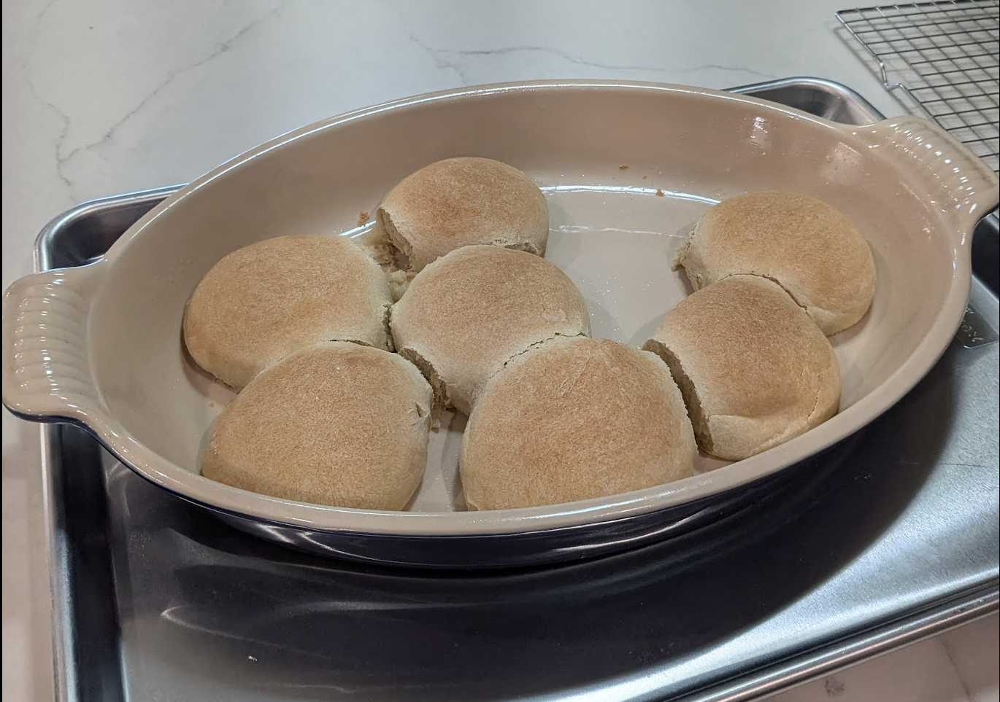

Five Ingredient Yeast Rolls

Ingredients
- 240 ml warm water
- 7 g active dry yeast
- 25 g sugar
- 250 g bread flour
- 6 g salt
- 27 g avocado oil (or other neutral oil)
- Butter for brushing on top
Directions
- Activate Yeast: Mix warm water, yeast, and sugar in a bowl; let sit 10 minutes until foamy.
- Mix Dough: Combine flour and salt in a large bowl, then stir in yeast mixture.
- First Rise: Form dough into a ball, return to bowl, cover, and let rest 1 hour.
- Knead: Transfer to floured surface, knead 5 minutes, adding flour if sticky.
- Shape Rolls: Divide into 8 pieces. Grease 9x12" baking dish, roll each piece into a ball, and place in dish. Cover and rise 1 hour. Preheat oven to 350°F after 45 minutes.
- Bake: Bake 30 minutes until tops are golden. Brush with butter if desired and serve warm.
Baking Timeline
| Step |
Direction |
Time (min) |
Notes |
| 1 |
Proof yeast |
10 |
|
| 2 |
Combine and rest |
60 |
|
| 3 |
Knead |
5 |
|
| 4 |
Divide, roll, proof |
60 |
Preheat @45 minutes |
| 5 |
Bake @350 |
35 |
Check @30 minutes |
Michael Fritsche
mbf@fritsche.org